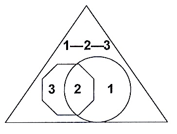
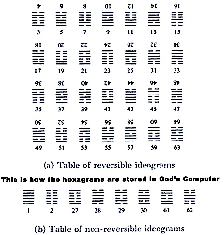
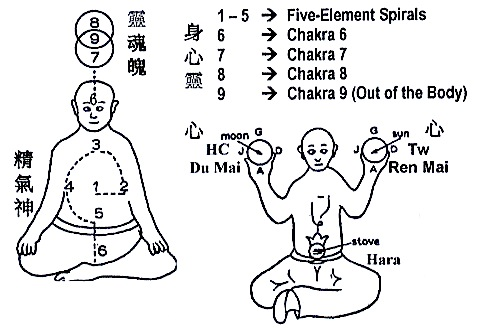

MATTER-BEING PARADIGM: A SUMMARY
{kind=link}
MATTER-BEING PARADIGM
A Brief Summary
This paradigm is a synthesis of metaphysics in ancient philosophy and quantum-relativistic physics of today. Also, Included in this synthesis is a 3-dimensional world of substances.
(1) In metaphysics, the emphasis is the concept of Being embedded in understanding mind-soul-spirit and free will. Embedded in mind-soul-spirit and free will is the concept of God, or the Creator, or the First Cause. All these metaphysical issues taken together are referred to as the Logic of Being.
(2) In quantum-relativistic physics the emphasis is in understanding local/non-local space-time interactions of quanta. Embedded in these interactions are the phenomena of observer-observed reality in the frame of reference of the observer and the observed whose frame of reference can be different from each other. These observer-observed phenomena form the reality for both the observer and the observed. All these observer-observed interplays taken together are referred to as the Logic of Matter-Being interactions.
(3) In the world of substances, the emphasis is in understanding the concepts of space, time, motions, and atomic-molecular formation. Embedded in these concepts are the meanings of action-at-a-distance, the vacuum as related to the metaphysical idea of an aether, and the question of existences.
It is in this world of substances that space in the sense of 3-dimensional, time in the sense of durations, velocity in the sense of continuous motions, masses in the sense of rigid bodies or molecules-atoms, and forces in the sense of push-pull are co-created in the collapsed outputs of the soul-particle singularity crossover. Taken together is an attempt to explain the existence of matter. This existence is embedded in the Logic of Matter.
In the Matter-Being Paradigm:
(1) → The Logic of Being, (2) → The Logic of Matter-Being, or Being-Matter, or observer-observed interplays, and (3) → The Logic of Matter. All three can be taken together or (1)—(2)—(3) referred to as a Holon, the unit of wholeness among Being, Matter, and their interactions (see diagram below). Thus, Matter-Being Paradigm can be referred to as a Paradigm of Holons. In this Holon paradigm, there exists a first observer, a first being observed, and a first observer-observed interplay; or a First Holon.

The Holon (1—2—3) is more than the Sum (1+2+3)
{kind=link}
The boundaries in the above diagram are imaginary. Inside these boundaries are logic contents. For example:
1 → Heaven, Yang or Positive Contents (e.g., Love)
3 → Hell, Yin or Negative Contents (e.g., Hate)
2 → Free Wills, a choice to be in Heaven or in Hell, or just be Human
Both Heaven and Hell is in us Human, defined by Free Will—Love—Hate, the Holon 1—2—3. Love and Hate are imaginary operators executed by Free Will. This imaginary operator is consciousness, while Free Will is intention.
In the logic of 3-dimensional space, this imaginary operator is [ i ], the square root of a negative number. In addition time, the moment of Now, is also an imaginary operator. These imaginary operators are referred to as the teleportation operator, i.e., it teleport us Human into Heaven or into Hell. Since all equations of motions (defined by ψ) for quanta in relativistic-quantum physics contain the operator [ i ], ψ is a teleportation operator.
Teleportation Operator -> Teleport to the Boundary, at the crossover
Crossover is defined as infinity in the logic of matter. In the Matter-Being Paradigm, Infinity is also an imaginary number. That is to say, infinity is at the junction where two or more imaginary boundaries meet. It is at this junction that the observer (the key, ψ) meets with the observed (the lock, ψ∗). And the lock-key state (or ψ∗ψ) is a state at which the observer communicates perfectly with the observed. If one needs to give a number for this junction, this can be either infinity or zero. In metaphysics, this imaginary number is the Tao (for the junction between Human and Heaven). Perhaps, in this case, one can argue that when the Tao is zero, Human is in perfect harmony with God. When the Tao takes on the number infinity, Human becomes the image of God.
The lock ←→ key interactions at crossovers
Brain-Spirit Crossover
Spiral—Vortex—Spin ←→ Numbers—Line Diagrams—Intentions
Brain-Soul Crossover
Spiral—Vortex—Spin ←→ Sacred Geometry—Polyhedrons—Intentions
Holon Definitions
Spiral—Vortex—Spin → Storage of Information
Numbers—Line Diagrams—Intentions → Convert Intentions into Computer Code
Sacred Geometry—Polyhedrons—Intentions → Gnomonic Expansion-Contraction in the observer-observed intended frames of references
The First Holon is the Self-Programmable Vacuum (or God’s) Computer:
The first observer is taken as God. The first being observed is number 9 in base-9 (or modulo 9). The observer-observed interplay is the symmetry breaks of number 9 into many logic components of 10 according to the free will of the observer.
There is One, the Observer (or God). One produces Two, which is Number 9. Two produce Three from the free will of breaking 9 into its components. And Three produces everything in the involution-evolution logic of 10 (see the various 10-logic potentials in the papers on the Acu-Brain and the Creation: Universe’s Many 10-Logic Potentials). This First Holon is the first cause, generating the universe inside the self-programming vacuum computer.
The Universe inside the Vacuum Computer:
(1) → The Logic Encoded inside a program named The Universe. (2) → The Execution of the modules and the paths within each of the modules in the Universe program. (3) → The outputs of the Vacuum Computer. In Being Logic: (1) → The Spirit. (2) → The Soul in an ever-changing state of becoming. (3) → The Mind, defined as Brain-Soul and/or Brain-Spirit interface. In Matter Logic: (1) → The Logic-information component (or Dark-Matter). (2) → The quanta, in an ever-changing state of information-energy (or Dark Energy). (3) → The particle, collapsed quanta state of energy-masses (or Visible Matter). This Universe is generated by the Observer-Observed inside the First Holon following the involution-evolution logic of free will. In this paradigm, entropy is the logic differences between involution and evolution.
The Universe inside the Computer
(Illustrated by the Laptop, as shown, where the entire Universe goes into)
The Invisible Universe of Logic-Information including the Laptop is shown in the top diagram (except the laptop shown at the end of the chain of creations). The Visible (created from invisible or the computer outputs), the bottom diagram, is taken from Seth Lloyd, “Programming the Universe.” “Is the universe actually a giant quantum computer? According to Seth Lloyd–Professor of Quantum-Mechanical Engineering at MIT and originator of the first technologically feasible design for a working quantum computer–the answer is yes.”
Resolving Quantum Difficulties
Probability of Observer’s Reality:
Observer → The Key, Observed → The Lock, Observation → Key looking for the Lock, Observer’s interplay with the Observed → (The probability of) Key found Lock, Observer’s Reality → (The probability of) The Lock is opened. Quantum Determinism: (1) Informed on “making, or knowing” the key logic corresponds to lock logic. (2) The Key knows the where about of the Lock. (3) The Lock is opened. Again it is a Holon. The logic of connecting the Key with the Lock is the quantum operator i (the imaginary number) in the logic of the quanta, and consciousness in the logic of intention inside mind-soul-spirit. Taking i as the teleportation operator, (1) → ψ, (2) → ψ∗, (3) → ψψ∗.Thus, both the imaginary number i and consciousness including time-instinct are teleportation operators connecting the key in the brain and the lock in the spirit. This explains the fact that space-time continuum is formulated with the space-teleportation Holon operator i—c—t, where c is the light constant and t is the time-instinct. In this paradigm, both t and i are teleportation operators while c is a constant together with all other physical constants generated at the brain-spirit/brain-soul singularity crossovers.
Heisenberg Uncertainty is
the conflicts between thinking with knowledge and knowing with the “heart” (defined by acu-point circuits). The former is the physical mind with the brain operator. The later is the mind of the soul with the heart operator referred to as the Acu-Brain.
Conservation of Being with Matter:
In the Logic Vacuum
Dark Matter -> Logic – Information Conserved
In the Information Vacuum
Dark Energy -> Information – Energy Conserved
In the Visible Universe
Visible Matter -> Energy – Mass Conserved
Local/Non-Local Entanglement → Conflicts between information-energy in the soul world and the energy-mass in the physical world, namely the energy entangled at the singularity crossover between the soul and the physical.
For deterministic quantum technology, these entangled information-energy (or magnetic monopoles) generated between soul activities in the information vacuum and energy-mass in the physical space must be shielded. In addition, the computer learned and encoded the intentions of both the technology designer-operator and the logic of the technology in such a way that computer execution and outputs become a natural observer-observed lock-key respondence at their intended frame of reference.
AND SO ON…(See Website and the Book)
In Being-Matter Interface Logic:
HUMAN OBSERVER-OBSERVED UNIVERSE ACCORDING TO THE MATTER-BEING PARADIGM
{kind=link}
For qualitative meanings of these numbers, see the Book for details. For the meanings of these Chinese Characters, see the page on Purpose and the Book.
NUMBER, THE FIRST PARADIGM
The ancient philosophers “see” number at the brain-spirit crossover between the logic-information vacuum and the observer’s brain. Thus, as John Michell puts it in “The Dimensions of Paradise:”
“In the writings of the old philosophers, there is common agreement that the true purpose of number is for investigating the universe. Traditional cosmogonies tell how he Creator dream up a scheme of numbers, and from that original thought everything else proceeded.”
Number in its qualitative sense formed the First Paradigm, or the First Cause. On the other hand, sacred geometry ranks next to number, as the Queen of science, expressing through visible and invisible shapes expressed itself at the brain-soul crossover between the information-energy vacuum and the observer’s brain. In short, number and form at Creation, namely at the First Cause, were One.
AND SO ON…(See Postings of later dates)
10 DIMENSIONS OF VACUUM COMPUTER LOGIC IN LINE DIAGRAMS REPRESENTING THE LOGIC COMPONENT OF MATTER WHERE THE LOGIC COMPONENT OF ALL ELEMENTARY PARTICLES (IN THE STANDARD MODEL) ARE FORMED (see Postings of later dates detail)

These line diagrams embedded in the hexagrams (outer symbol) are
Yin or Yang Lines
Yin or Yang or neutral Bigrams
Yin or Yang Trigrams
Yin or Yang or neutral Hexagrams
Forming 28 Pairs of trigrams plus 8 single hexagrams in a set of 64 Hexagrams as shown below

The above 36 Coordinates plus one of the Observer-Observed pair equals 37. This is the Observed free will determined by the numbers of heads or tails in your coin-throw to obtain the hexagrams. The other half of the Observer-Observed interplay is embedded in the Observer’s mind interacting with the Tetragram symbols. Formed by the Free Wills of picking Yin or Yang lines symbolized by the Holon of 27 yin—27 yang—27 neutral Bigrams in forming the 81 Tetragrams (inter symbol), where the neutral line symbolizes free will.
{kind=link}
The 64 Hexagrams are visible logic, while the 27 line diagram-Holon that formed the Tetragrams are invisible logic, due to the Observer’s free will. This explains why the 64 Hexagrms are used in the I-Ching Logic, while the meanings of the 81 Tetragrams are hidden in the Logic of the T’ai Hsuan Ching (a Lost companion of the I-Ching). The Hexagram line diagrams symbolized Matter Logic, while the Tetragram line diagrams denote Being Logic.
The ratio of Matter Logic divided by Being Logic equals
37 / 27 = 1.37037037…
The value 137 is the fine structure constant. One can also call this fine structure constant, namely the logic of binding light with matter or:
Fine Structure Constant → Binds Together Matter Logic with Being Logic to form the encoding logic of a Matter-Being Universe inside the computer.
LINE DIAGRAMS
The I Ching is claimed by learned Chinese scholars of all the dynasties in Chinese history and among European scholars as the most remarkable book of the world literature. However, the Matter-Being Paradigm’s involvement with the I Ching is not its literature but its line diagram logic to be used as machine language for the Vacuum Computer. Leibniz first brings the line diagram logic of the I Ching hexagrams to the consciousness of modern binary arithmetic. The present paradigm expands the binary arithmetic of yin and yang into a set of 10-dimensional machine logic of the vacuum computer. This set of 10-dimensional logic is one of many 10-logic potential, as described in this Website.
Physics is the paradigm for all Western material sciences. On the other hand, I Ching is the paradigm for all Chinese sciences that involves the logic in Being, especially health. Thus, besides borrowing the I Ching line diagrams for use in defining the machine language of the vacuum computer, those Being Logics in Chinese sciences were also integrated with Matter Logic in quantum-relativistic physics. In this respect, the logic in Nei Ching (the Classic of Chinese Medicine) was especially important in this integration.
AND SO ON… (See Postings of later dates the derivations of all other physical constants and the integration of Chinese concepts of Health with the quantum observer-observed concept. Vice versa, the concept of an acu-point is integrated into the notion of a monopole or information potential, and the concept of mind-soul-spirit health in Nei Ching is integrated into the three levels of Matter Logic.)
BEING IN HUMAN PHYSIOLOGY

{kind=link}
AND SO ON… (See Book for details)
TO THE MYSTIC
The Universe modeled as a Computer Program inside the Self-Programmable Vacuum Computer has a direct correspondence with the Akasha Chronicle of the mystic. In Rudolf Steiner’s explanation:
Everything which comes into being in time has its origin in the eternal. But the eternal is not accessible to sensory perception. Nevertheless, the ways to the perception of the eternal are open for man… Then he can see in events what is not perceptible to the senses, that part which time cannot destroy. He penetrates from transitory to non-transitory history. It is a fact that this history is written in other characters than in ordinary history. In gnosis and in theosophy it is called the “Akasha Chronicle.” Only a faint conception of this chronicle can be given in our language. For our language corresponds to the world of the senses… To the uninitiated, who cannot yet convince himself of the reality of a separate spiritual world through his own experience, the initiate easily appears to be a visionary, if not something worse.
The language of this non-transitory history is an observer-observed interface language. The observer is the intention inside the programmer’s mind. While the observed are the interplay inside the Holon of [observer’s intention]—[the computer’s machine language]—[ computer execution and/or outputs]. This interplay is a lock-key Holon. It is through this lock-key Holon that realities are formed in the observer’s mind (at the brain-soul and/or brain-spirit crossovers), in the computer’s encoded modules (the 10-logic-potential mondalas), and in the Akasha Chronicle (the paths of the mondalas). These realities again form a Holon. These paths are based on either the mathematical (or topological) logic of the physicists or the visions of the mystics.
Crossover Holon of Observer–Akasha Chronicle–Observed
At Brain-Soul Crossover
Mystic -> Quantum Observer
Radionics -> Executing Information-Energy (or Subtle Energy) at Holon of brain-soul crossover. The Information-Energy is unstable and temporary due to the ever-changing state of the soul. Radionics are produced temporarially Holon Implant on the Observed (”object”).
Psychic Visions -> Executing Information-Energy at Holon of brain-soul crossover. Information-energy appeared as visions in the mind of the observer.
Psychic Attack or Healing -> Executing Information-Energy directed to the Observed. In the Attack case, the Information-Energy is negative. In the Healing case, the Information-Energy is positive.
At Brain-Spirit Crossover
Conscious-Intentions -> Reading of Logic-Information at the Holon of brain-spirit crossover for answers to a particular question. Accuracy depends on the specificity of the question and its “logic-accuracy”. Reading of computer program modules may initiate encoding of logic-information into the computer modules and their paths (see quantum experiments).
Dowsing –> Reading of Logic-Information at brain-spirit crossover for yes-no answers to simple questions, whose answers are already in the computer module.
Quantum Experiments -> The Computer learned the Observer’s (or Experimenter’s) Intention and self-programmed the intention into the program module by converting intention into computer machine logic. Yet these experiments will be disturbed by soul-particle entanglements, thus information shielding is necessary.